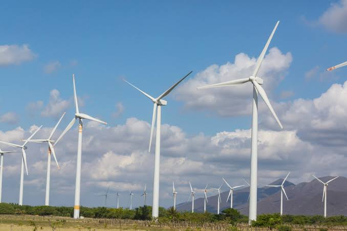

Windmill & Wind Energy
Wind energy is considered to be a renewable source of evergy
generated using the movement and flow of wind. It serves as a
alternative for those parts of the world where it is very hard to
generate energy using fuels or in remote places. Generation of wind
energy leaves no pollution and it leaves no pollutants and supports
sustainable development.
Wind energy works on a very simple principle. For example if we provide
current/ electricity energy to a motor it spins and similarly if we rotate the motor,
the motor generate electricity.
